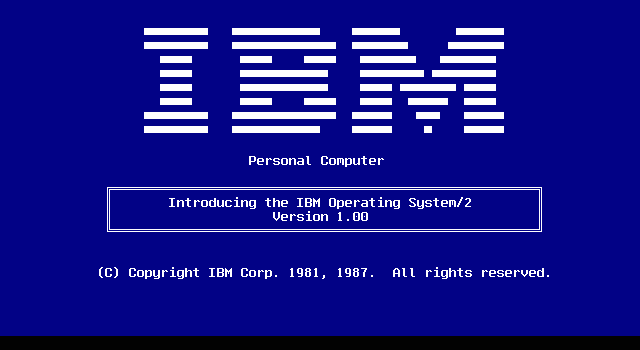
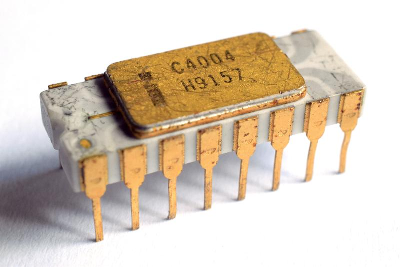

Contenido de la página de los sistemas operativos
Historia
Un sistema operativo es uno o varios programas que se usan para poder trabajar con los componentes de un equipo de cómputo. Los sistemas operativos proveen un conjunto de funciones necesarias y usadas por diversos programas de aplicaciones de una computadora, y los vínculos necesarios para controlar y sincronizar el hardware de la misma. En las primeras computadoras, que no tenían sistema operativo, cada programa necesitaba la más detallada especificación del hardware para ejecutarse correctamente y desarrollar tareas estándares, y sus propios drivers para los dispositivos periféricos como impresoras y lectores de tarjetas perforadas. El incremento de la complejidad del hardware y los programas de aplicaciones eventualmente hicieron del sistema operativo una necesidad.
Fuente: https://www.udg.co.cu/cmap/sistemas_operativos/sistema_operativo/historia/historia.html
El primer sistema operativo

El concepto de Sistema Operativo surge en la década de los 50. El primer Sistema Operativo de la historia fue creado en 1956 para un ordenador IBM 704, y básicamente lo único que hacía era comenzar la ejecución de un programa cuando el anterior terminaba.
Fuente: https://www.fib.upc.edu/retro-informatica/historia/so.html#:~:text=El%20concepto%20de%20Sistema%20Operativo,programa%20cuando%20el%20anterior%20terminaba.
El primer procesador

El 4004 fue lanzado en un paquete de 16 pines CERDIP el 15 de noviembre de 1971. El 4004 fue el primer procesador de computadora diseñado y fabricado por el fabricante de chips Intel, quien previamente hacía semiconductores de chips de memoria. Marcian "Ted" Hoff formuló la propuesta arquitectónica en 1969
Fuente: https://www.profesionalreview.com/2018/04/21/cual-fue-el-primer-microprocesador-de-la-historia-y-quien-lo-invento/